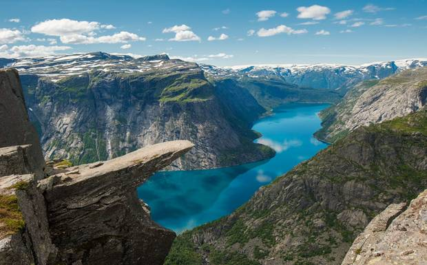
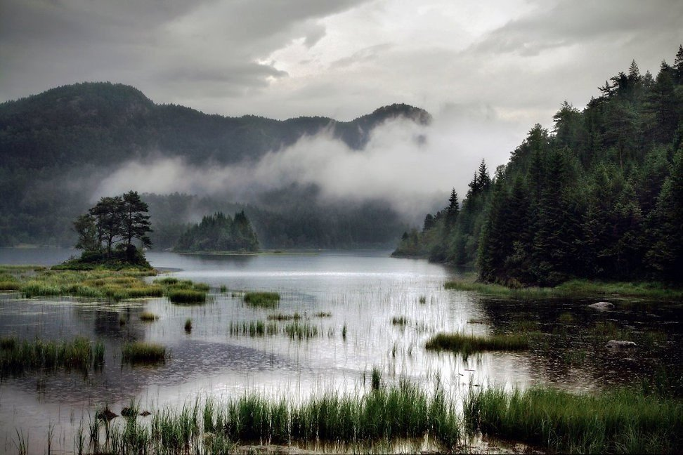

Geologically, a fjord (British English: /fjɔːd/, /fɪɔːd/; American English: /fɪɔɹd/, rare: /fj-/;[1] Australian English: /fɪ̝oːd/; Norwegian Bokmål and Nynorsk: /fjɔr/, /-ɔɾ/, dialectal: /-ɔʁ/) (variant spelling: fiord, especially in New Zealand) is a long, narrow inlet with steep sides or cliffs, created by glacial erosion. The word comes to English from Norwegian, in many cases to refer to any long narrow body of water other than the more specific meaning it has in English. There are many fjords on the coasts of Norway, Iceland, Greenland, Alaska, Kerguelen Islands, British Columbia, Nunavut, Washington and Chile.[2] The Norwegian definition of "fjord" differs from that of English - in Norwegian "fjord" refers to any inlet or channel (see Oslofjord). A fjord is formed when a glacier cuts a U-shaped valley by ice segregation and abrasion of the surrounding bedrock.[3] Glacial melting is accompanied by the rebounding of the Earth's crust as the ice load and eroded sediment is removed (also called isostasy or glacial rebound). In some cases this rebound is faster than sea level rise. Most fjords are deeper than the adjacent sea; Sognefjord, Norway, reaches as much as 1,300 m (4,265 ft) below sea level. Fjords generally have a sill or shoal (bedrock) at their mouth caused by the previous glacier's reduced erosion rate and terminal moraine.[4] In many cases this sill causes extreme currents and large saltwater rapids (see skookumchuck). Saltstraumen in Norway is often described as the world's strongest tidal current. These characteristics distinguish fjords from rias (e.g. the Bay of Kotor), which are drowned valleys flooded by the rising sea.

Europe during Weichselian- & Würm-Glaciation As late as 2000, some coral reefs were discovered along the bottoms of the Norwegian fjords.[5] These reefs were found in fjords from the north of Norway to the south. The marine life on the reefs is believed to be one of the most important reasons why the Norwegian coastline is such a generous fishing ground. Since this discovery is fairly new, little research has been done. The reefs are host to thousands of lifeforms such as plankton, coral, anemones, fish, several species of shark, and many more. Most are specially adapted to life under the greater pressure of the water column above it[citation needed], and the total darkness of the deep sea. New Zealand's fiords are also host to deep-water corals, but a surface layer of dark fresh water allows these corals to grow in much shallower water than usual. An underwater observatory in Milford Sound allows tourists to view them without diving.In some places near the seaward margins of areas with fjords, the ice-scoured channels are so numerous and varied in direction that the rocky coast is divided into thousands of island blocks, some large and mountainous while others are merely rocky points or rock reefs, menacing navigation. These are called skerries. The term skerry is derived from the Old Norse sker, which means a rock in the sea. Skerries most commonly formed at the outlet of fjords where submerged glacially formed valleys perpendicular to the coast join with other cross valleys in a complex array. The island fringe of Norway is such a group of skerries (called a skjærgård); many of the cross fjords are so arranged that they parallel the coast and provide a protected channel behind an almost unbroken succession of mountainous islands and skerries. By this channel one can travel through a protected passage almost the entire 1,601 km (995 mi) route from Stavanger to North Cape, Norway. The Blindleia is a skerry-protected waterway that starts near Kristiansand in southern Norway, and continues past Lillesand. The Swedish coast along Bohuslän is likewise skerry guarded. The Inside Passage provides a similar route from Seattle, Washington, and Vancouver, British Columbia, to Skagway, Alaska. Yet another such skerry protected passage extends from the Straits of Magellan north for 800 km (500 mi).
Important fjords and lakes in Norway. Note: The part of the map showing the northern fjords has a considerably smaller scale. Blurred coastlines = skerries With Indo European origin (*prtús from *por- or *per) in the verb fara (travelling/ferrying), the Norse noun substantive fjǫrðr means a "lake-like" waterbody used for passage and ferrying. The Scandinavian fjord, Proto-Scandinavian *ferþuz, is the origin for similar European words: Icelandic fjörður, Swedish fjärd (for Baltic waterbodies), Scots firth. The Danish even use fjord for shallow lagoons as well as minor bodies of water cut into land; compare Scottish loch. The Germans call the narrow long bays of Schleswig-Holstein Förde but the Norwegian bays Fjord. The word is also related to English ford (in German Furt, Low German Ford or Vörde, in Dutch names voorde, cf. Vilvoorde), Greek poros, and Latin portus. Fjord/firth/Förde as well as ford/Furt/Vörde/voorde refer to a Germanic verb for to travel: Swedish fara, Danish fare, Dutch varen, German fahren; English to fare has partially lost that meaning. The one geographic object is a waterbody that allows the traveller to enter the land by boat, the other one is the shallow site in a waterbody that allows the traveller to cross the water on foot, horse or wheels. As a loanword from Norwegian, it is one of the few words in the English language to start with the sequence fj, although the word was for a long time normally rendered fiord,[8] a spelling preserved in place names such as Grise Fiord, but now generally current only in New Zealand English. Scandinavian usagestrong>The use of the word fjord in Norwegian, Danish and Swedish is more general than in English and in international scientific terminology. In Scandinavia, fjord is used for a narrow inlet of the sea in Norway, Denmark and western Sweden, but this is not its only application. In Norway and Iceland, the usage is closest to the Old Norse, with fjord used for both a firth and for a long, narrow inlet. In eastern Norway, the term is also applied to long narrow freshwater lakes (for instance Mjøsa [commonly referred to as fjorden], Randsfjorden and Tyrifjorden) and sometimes even to rivers (in local usage, for instance in Flå in Hallingdal, the Hallingdal river is referred to as fjorden). In east Sweden, the name fjärd is used in a synonymous manner for bays, bights and narrow inlets on the Swedish Baltic Sea coast, and in most Swedish lakes. This latter term is also used for bodies of water off the coast of Finland where Finland Swedish is spoken. In Danish, the word may even apply to shallow lagoons. In modern Icelandic, fjörður is still used with the broader meaning of firth or inlet. In Faroese fjørður is used both about inlets and about broader sounds, whereas a narrower sound is called sund. In the Finnish language, a word vuono is used although there is only one fjord in Finland. Small waterfalls within these fjords are also used as freshwater resources for the people of Scandinavia and, in particular, Norway. The German use of the word Förde for long narrow bays on their Baltic Sea coastline, indicates a common Germanic origin of the word. The landscape consists mainly of moraine heaps. The "Förden" and some "fjords" on the east side of Jutland, Denmark are also of glacial origin. But while the glaciers digging "real" fjords moved from the mountains to the sea, in Denmark and Germany they were tongues of a huge glacier covering the basin of which is now the Baltic Sea. See Förden and East Jutland Fjorde. Whereas fjord names mostly describe bays (though not always geological fjords), straits in the same regions typically are named Sund, in Scandinavian languages as well as in German. The word is related to "to sunder" in the meaning of "to separate". So the use of Sound to name fjords in North America and New Zealand differs from the European meaning of that word. The name of Wexford in Ireland is originally derived from Veisafjǫrðr ("inlet of the mud flats") in Old Norse, as used by the Viking settlers—though the inlet at that place in modern terms is an estuary, not a fjord.
The Lim bay in Croatia is sometimes called a fjord, but is actually a ria The differences in usage between the English and the Scandinavian languages have contributed to confusion in the use of the term fjord. Bodies of water that are clearly fjords in Scandinavian languages are not considered fjords in English; similarly bodies of water that would clearly not be fjords in the Scandinavian sense have been named or suggested to be fjords. Examples of this confused usage follow. The Bay of Kotor in Montenegro has been suggested by some to be a fjord, but is in fact a drowned river canyon or ria. Similarly the Lim bay in Istria, Croatia, is sometimes called "Lim fjord" although it is not actually a fjord carved by glacial erosion but instead a ria dug by the river Pazinčica. The Croats call it Limski kanal, which does not translate precisely to the English equivalent either. In the Danish language any inlet is called a fjord, but none of the "fjords" of Denmark may be considered a fjord in the geological sense. Limfjord in English terminology is a sound, since it separates the North Jutlandic Island (Vendsyssel-Thy) from the rest of Jutland. Ringkøbing Fjord on the western coast of Jutland is a lagoon. The long narrow "fjords" of Denmark's Baltic Sea coast like the German Förden were dug by ice moving from the sea upon land, while fjords in the geological sense were dug by ice moving from the mountains down to the sea. The fjords in Finnmark (Norway), which are fjords in the Scandinavian sense of the term, are considered by some to be false fjords.[9] Although glacially formed, most Finnmark fjords lack the classic hallmark steep-sided valleys of the more southerly Norwegian fjords since the glacial pack was deep enough to cover even the high grounds when they were formed. The Oslofjord on the other hand is a rift valley, and not glacially formed. In Acapulco, Mexico, the calanques—narrow, rocky inlets—on the western side of the city, where the famous cliff-divers perform daily, are described in the city's tourist literature as being fjords. Freshwater fjords at the Italian slope of the Alps: blue figures = water surface in meters above sea level, brown figures = ground of the lakes in meters above (+) or below (-) sea level Freshwater fjords[edit] Some Norwegian freshwater lakes that have formed in long glacially carved valleys with terminal moraines blocking the outlet follow the Norwegian naming convention; they are named fjords. Outside of Norway, the three western arms of New Zealand's Lake Te Anau are named North Fiord, Middle Fiord and South Fiord. Another freshwater "fjord" in a larger lake is Western Brook Pond, in Newfoundland's Gros Morne National Park; it is also often described as a fjord, but is actually a freshwater lake cut off from the sea, so is not a fjord in the English sense of the term. Such lakes are sometimes called "fjord lakes". Okanagan Lake was the first North American lake to be so described, in 1962.[10] The bedrock there has been eroded up to 650 m (2,133 ft) below sea level, which is 2,000 m (6,562 ft) below the surrounding regional topography.[11] Fjord lakes are common on the inland lea of the Coast Mountains and Cascade Range; notable ones include Lake Chelan, Seton Lake, Chilko Lake, and Atlin Lake. Kootenay Lake, Slocan Lake and others in the basin of the Columbia River are also fjord-like in nature, and created by glaciation in the same way. Along the British Columbia Coast, a notable fjord-lake is Owikeno Lake, which is a freshwater extension of Rivers Inlet. Quesnel Lake, located in central British Columbia, is claimed to be the deepest fjord formed lake on earth. Another area notable for fjord lakes is northern Italy and southern Switzerland: Lake Como and its neighbours.